1과목: 식품위생학
1. 다음 중 환경오염물질 등에 기인한 내분비장에 물질이 아닌 것은?
2. D-Sorbitol을 상업적으로 이용할 때 합성하는 방법은?
3. 장염 비브리오균에 대한 설명으로 틀린 것은?
4. 식품 내의 수분활성도를 낮추고자 할 때 효과가 가장 작은 방법은?
5. 다음 중 채소류를 매개로 하여 감염될 수 있는 가능성이 가장 낮은 기생충은?
6. 아래는 식품 등의 표시기준상 트랜스지방의 정의를 나타낸 것이다. ( )안에 들어갈 용어를 순서대로 나열한 것은?
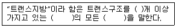
7. mycotoxin의 종류가 아닌 것은?
8. 알코올을 살균용도로 사용할 때 가장 일반적인 농도는?
9. 식품포장용기로 사용되는 유리에 대한 설명으로 틀린 것은?
10. 다음 중 수분함량 측정방법이 아닌 것은?
11. 아래의 식중독 예방을 위한 위생관리에 대한 설명으로 ( )안의 균에 대한 설명으로 틀린 것은?
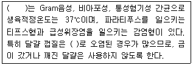
12. 아래의 반응식에 의한 제조방법으로 만들어지는 식품첨가물명과 주요용도를 옳게 나열한 것은?
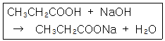
13. 친환경농업육성방법 친환경농산물의 종류 명칭에 해당되지 않는 것은? (단, 축산물의 경우도 포함)
14. 식품을 채쥐, 제조, 가공, 조리, 저장, 운반 또는 판매하는 직접 종사하는 자는 연 1회 정기 건강진단을 받아야하는데, 다음 중 건강진단항목이 아닌 것은?
15. 식품 내에 존재하는 미생물에 대한 설명으로 틀린 것은?
16. 단체급식이나 외식산업 HACCP의 7가지 원칙에 해당하지 않는 것은?
17. 노로바이러스에 대한 설명으로 틀린 것은?
18. 식품공전상 총칙의 내용으로 틀린 것은?
19. dioxin이 인체 내에 잘 축적되는 이유는?
20. 아래의 설명에 해당하는 인수공통전염병은?
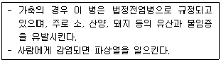
2과목: 식품화학
21. 다음 중 물에 녹고 가열에 의해 응고되는 단백질은?
22. 다음 중 식품의 알칼리도를 구하는 공식은?
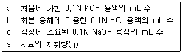
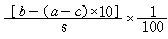
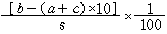
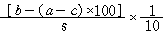
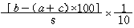
23. 감미가 강한 것부터 차례로 나열한 것은?
24. provitamin A에 대한 설명으로 틀린 것은?
25. 비타민 B2의 주요 기능은?
26. carotenoid의 안전성에 가장 큰 영향을 주는 인자는?
27. 설탕에 소금 0.15%를 가했을 때 단맛이 증가되는 현상은?
28. 다음 중 매운 맛과 가장 거리가 먼 것은?
29. 산화방지제로 사용되는 BHT는 식품 제조시 stibenequinone을 형성하여 황색을 나타내는 경우가 있는데 추정 가능한 원인은?
30. 메밀묵을 만들기 위하여 메밀전분을 갈아서 만든 유동성이 있는 액체성 물질을 가열하고 난 뒤 냉각하였더니 반고체 상태(묵)가 되었다. 이 묵의 교질상태는?
31. 고기류의 성분 및 성질을 설명한 것 중 틀린 것은?
32. 고체식품에서 항복응력(yield stress)을 초과할 때까지 영구변형이 일어나지 않는 성질은?
33. 쇠고기와 양고기의 지방산은 닭고기, 돼지감자의 지방산 조성에 비하여 어떤 지방산의 함량이 높아 상대적으로 높은 융점을 갖게 되는가?
34. 다음 중 질소화산계수가 가장 큰 식품은?(오류 신고가 접수된 문제입니다. 반드시 정답과 해설을 확인하시기 바랍니다.)
35. 다이어트 식품소재로 사용되는 복합 다당류인 클루코만난(glucomannan)을 함유하고 있는 것은
36. 자유라디칼(유리라디칼)에 대한 설명으로 옳은 것은?
37. 1g의 어떤 단당류 화합물을 20mL의 메탄올에 용해시킨 후 10㎝두께의 편광기에 넣고 광회전도를 측정하였더니 (+)5.0°가 나왔다. 이 화합물의 고유 광회전도는?
38. 우유의 성질에 대한 설명으로 옳은 것은?
39. 동물성 단백질에 대한 설명으로 옳은 것은?
40. 콜로이드 입자의 성질이 아닌 것은?
3과목: 식품가공학
41. 밀가루의 제분 후 인공적인 산화를 시키는 첨가물 중 국내에서 사용할 수 없는 것은?
42. 백미 성분 중 도정률이 높아짐에 따라 가장 큰 비율로 감소하는 것은?
43. 제빵에서 가스빼기 하는 목적이 아닌 것은?
44. 김치의 초기 발효에 관여하는 저온숙성의 주 발효균은?
45. 대형 아이스크림 제조에 알맞은 over run 범위는?
46. 20% 유지성분을 함유하는 콩 200kg을 2%의 유지를 함유하는 용매 미셀라(miscella) 200kg으로 추출한 결과 20%의 유지를 함유하는 미셀라 160kg을 얻었다. 이 때 추출잔사에 잔존된 유지량은 몇 kg인가?
47. 증기압축식 냉동장치에 흔히 사용되는 냉동제가 아닌 것은?
48. 진공계를 사용하여 복숭아 통조림의 진공도를 측정하였더니 지시진공도가 30cmHg 였고 이 통조림의 head space가 4mL이었을 때 이 통조림의 진진공도는? (단, Bourdon관의 내용적은 1.2mL 이다.)
49. 38.35% H2SO4 수용액이 담긴 밀폐용기 내의 곶감을 보관하였더니 평형상태에서 중량의 변화가 없었다. 곶감의 수분활성도는? (단, 38.35% H2SO4 수용액의 상대습도는 60%)
50. 식품첨가물로 사용되는 Hexane에 대한 설명으로 틀린 것은?
51. 아래에서 설명하는 기능성 원료는?
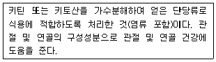
52. 햄 제조에 대한 설명으로 틀린 것은?
53. 자일리톨(xylitol)에 대한 설명으로 틀린 것은?
54. 유당분해효소결핍증에 직접적으로 관여하는 효소는?
55. 전통적인 제조법에 의해 두유를 제조할 때 불쾌한 냄새와 맛이 나고 두유의 수율이 낮은 문제가 생길 수 있는데, 이를 개선하는 방법이 아닌 것은?
56. 토마토 케찹 제조시 갈색이 발생하였다면 그 주된 원인은?
57. 식육은 가열처리 과정 중 색이 갈색으로 변하는 반면, 가공품인 소시지, 햄 등은 가열처리후에도 갈색으로 변하지 않는데 그 주된 이유는?
58. 식품에 방사선을 처리하는 공정에 대한 설명으로 틀린 것은?
59. 아래 그림과 같은 증방기의 병칭은?(복원 오류로 그림 파일이 없습니다. 정답은 2번 입니다. 그림파일을 가지고 계신 분께서는 관리자메일로 보내 주시면 감사하겠습니다.)
60. 트랜스지방에 대한 설명으로 틀린 것은?
4과목: 식품미생물학
61. 다음 중 균사에 격막을 갖지 않는 균은?
62. 사출포자를 형성하지 않는 효모는?
63. Sacchramyces 속에 대한 설명 중 틀린 것은?
64. 다음 중 유성생식이 불가능한 것은?
65. Torulopsis 속과 다른 미생물의 비료 설명으로 틀린 것은?
66. 송이버섯목, 백목이균목 등과같은 대부분의 버섯은 미생물 분류학상 어디에 속하는가?
67. 액체 식품 중의 생존균수를 희석평판 배양법으로 아래와 같이 측정하였을 때 식품 1ml 중의 colony 수는?
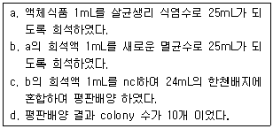
68. 염장어, 육제품, 우유의 적변을 일으키는 세균은?
69. 다음 중 유기물을 이용하여 생육하는 세균은?
70. Gram 양성균의 세포벽 성분은?
71. 황변미는 여름철 쌀의 저장 중 수분 15~20%에서도 미생물이 번식하여 대사독성물질이 생성되는 것인데 다음 중 이에 관련된 미생물은?
72. 진핵세포로 이루어져 있지 않은 것은?
73. 유전자 조작에 이용되는 벡터(Vector)가 가져야 할 특징으로 바람직하지 않은 것은?
74. 유전적 재조합(genetic recombination) 방법이 아닌 것은?
75. 방출까지의 바이러스 증식 단계가 올바르게 표현된 것은?
76. DNA의 수복기구가 아닌 것은?
77. 병원성 대장균(pathogenic E. coli)에 대한 설명으로 틀린 것은?
78. 곰팡이의 분류나 동정에 적용되지 않는 항목은?
79. Propionibacterium속의 특성과 관계없는 것은?
80. Leuconstoc mesenteroides의 영양요구 성분이 아닌 것은?
5과목: 생화학 및 발효학
81. aspartic acid의 pK1(-COOH)=1.88, pK2 (-NH3+)=9.60, pKR(-R기)=3.65일 때 등전점은?
82. 아래와 같은 반응으로 만들어지는 최종생성물은?
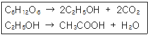
83. 광합성 과정은 명반응과 암반응으로 구분되는데 암반응 과정에서 주로 일어나는 현상은?
84. 연속배양의 장점이 아닌 것은?
85. 아래의 반응식에서 HCO3-의 수송체는?
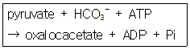
86. 재조합 DNA기술에 이용되는 akaline phosp- hatase의 기능은
87. electron transport system에서 cytochrome C의 전자전달 기능을 수행하는 금속성분은?
88. 청주양조용 쌀로 부적합한 것은?
89. 전분 1000kg으로부터 얻을 수 있는 100% 주정의 이론적 수득량은?
90. streptomyces aureus 효소를 이용하여 5'- nucleotidesfmff 만들 때, RNA분해 시 sodium arsenate(SA)를 넣어 반응시키는 이유는?
91. cholesterol 합성에 관여하는 HGM-CoA(beta -hydroxy-beta-methylglutaryl-CoA) redutase의 인산화(불활성화)와 탈인산화(활성화)에 관여하는 호르몬이 순서대로 바르게 짝지어진 것은?
92. 과일주 향미의 주성분은?
93. ethanol, lactate, acetate 등의 발효에 사용되는 해당과정 중의 주요 중간산물은?
94. biotin 과잉배지에서 glutamate 발효 시 첨가하는 물질은?
95. 발열반응과 흡열반응에서의 엔탈피(H)를 바르게 설명한 것은?
96. 산업폐수 처리방법 중 호기적 처리법인 것은?
97. 당밀의 알콜발효 시 밀폐식 발효의 장점이 아닌 것은?
98. invertase의 대한 설명으로 틀린 것은?
99. 생체 내 고에너지 화합물과 거리가 먼 것은?
100. DNA로부터 단백질 합성까지의 과정에서 t-RNA의 역할에 대한 설명으로 옳은 것은?